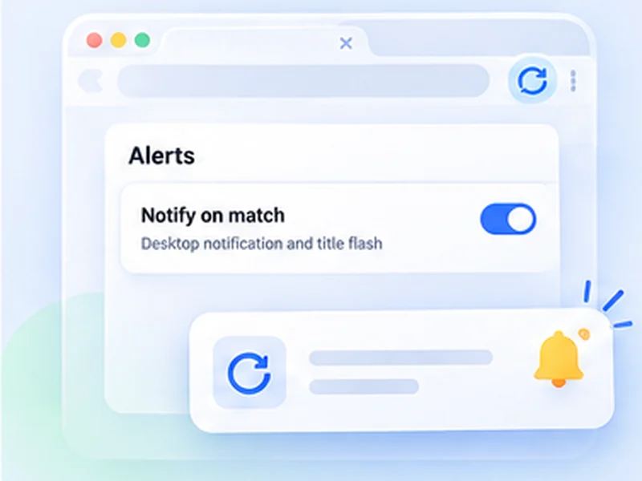

Keep an eye on a product restock.
Leave the product page open. Free Auto Refresh reloads it for you and tells you the moment it is back in stock.

How restock alerts works
Leave the product page open. Free Auto Refresh reloads it for you and tells you the moment it is back in stock.
The extension tells you; it does not buy for you. Have your account signed in and payment details ready so you can check out quickly.
Quick setup
Open the product page.
Set Min 30 and Max 60.
Under Watch the page choose Stop when text disappears and type the sold-out text exactly as shown.
Press Start and keep the browser open.
A restock alert for any online shop
Shops rarely tell you when a sold-out item returns, and their own back in stock notification emails often arrive after it has gone again. A restock alert you run yourself checks the product page every minute or so and tells you the moment the wording changes.
Because it runs in your own browser tab, it works on any shop, including ones you are signed in to, and needs no account.
In stock alert: which text to watch
Stop when text disappears
Watch the sold-out message, such as Out of stock, Sold out or Currently unavailable. This is usually the most reliable signal.
Stop when text appears
Watch for Add to cart or In stock. Use this only if that text is not already shown elsewhere on the page.
Stop when content changes
If the wording is unpredictable, point a CSS selector at the availability box and be alerted on any change.
A thoughtful way to monitor restocks
Use intervals that are reasonable for the site and only monitor pages you are allowed to access. The extension does not get around logins, queues, rate limits or other access restrictions.
Stay signed in with payment details saved, so you can check out quickly when the notification arrives. You complete the purchase yourself.
A worked example: a sold-out console
The product page shows a grey button reading Out of stock. Open the popup, set Min 30 and Max 60, and under Watch the page choose Stop when text disappears with the text Out of stock. Press Start and leave the tab open.
Every 30 to 60 seconds the page reloads. Each time, the extension waits for it to finish loading, then looks for the phrase. Hours later the button changes to Add to basket: the phrase is gone, refreshing stops, a desktop notification appears and the tab title flashes.
If the in stock alert does not fire
- The wording is different. Copy the phrase from the page itself; Sold out and Out of stock are not the same.
- The text is inside an image or a button label that is not text. Use Stop when content changes with a selector for the buy box.
- Availability loads late. Raise Extra wait to two or three seconds.
- The shop shows the phrase elsewhere, for example on related products. Use a selector to watch only the main item.
Stock checker or restock alert?
A stock checker website covers a fixed list of shops and items. This covers whatever page you have open, including small shops, regional sites and pages behind your login, because the check happens in your own tab.
At a glance
- Watch the exact words. Stop when 'Out of stock' disappears, or when 'Add to cart' appears.
- Random waits. A range such as 30 to 60 seconds is easier on the shop than a fixed beat.
- A clear alert. A desktop notification and a flashing tab title bring you back in time to buy.
Questions, answered.
Can I use Free Auto Refresh for restock alerts?
Yes. Set an interval, add a watch rule for the availability text, and it notifies you when the wording changes.
Does it get around queues, logins or purchase limits?
No. It makes the same request as pressing reload.
How often should it check?
Every 30 to 60 seconds at random is a sensible start. Faster checking risks being rate-limited.
Do I need to keep the tab open?
Yes, and the browser running. Keep the tab awake is on by default so it is not put to sleep.
Which is better, appears or disappears?
Use the text that is most specific to the product. If 'Add to cart' is also shown for other items on the page, watch for 'Out of stock' disappearing.
Let the page check itself.
Use the free extension for Chrome or Firefox.
Have a different use case in mind?
Share the browser task you would like to make easier. Your idea helps guide what gets built next.